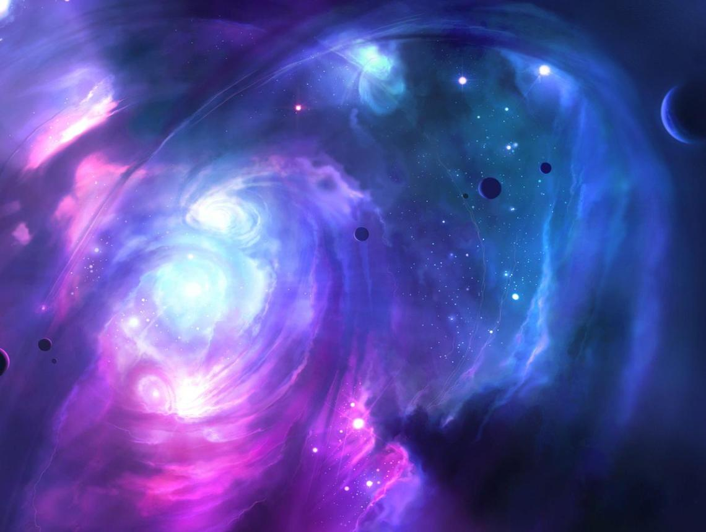

//sketchfab
<html>
 <head>
   <script src="https://aframe.io/releases/1.2.0/aframe.min.js"></script>
 </head>
 <body>
   <a-assets>
     
     
     <a-asset-item id="edifici" src="assets/Ruin/scene.gltf"></a-asset-item>
    <a-asset-item id="imgstar" src="assets/star/scene.gltf"></a-asset-item>
   </a-assets>

  
   <a-scene>
     <a-entity gltf-model="#edifici" position="39 -16 -90" scale="100 100 100"></a-entity>
     <a-cylinder color="cyan" radius="0.5" height="1" segments-radial="6" position="1 0 1"></a-cylinder>
     <a-entity gltf-model="#imgstar" position="2 2 -31" scale="3 3 3"></a-entity> 
     <a-sky color="#005"></a-sky>
     <a-sphere position="0 2 -5" radius="1" color="#ff0"></a-sphere>
     <a-sphere position="-5 2 0" radius="1" color="#0ff"></a-sphere>
     <a-sphere position="0 2 5" radius="1" color="#f00"></a-sphere>
     <a-sphere position="5 2 -5" radius="1"  src="#imgFantasma"
               animation="property: rotation; dur: 6000;
                      to: 0 360 0; loop: true">         
      </a-sphere>
     <a-plane position="-2 2 -6" src="#imgSortida" transparent="true"></a-plane>
   </a-scene>
 </body>
</html>

